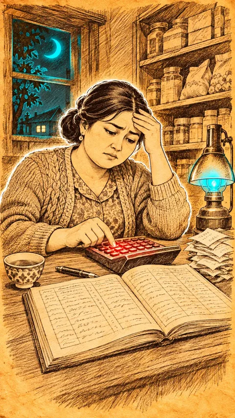

1-sahna — video, 9:16 (tik), 8 s

Nima bo'ladi
Malika kalkulyatorni bir necha marta bosadi, daftarga qaraydi, peshonasini ishqalab og'ir xo'rsinadi, boshini sekin chayqaydi
KameraJuda sekin push-in: charchagan yuziga yaqinlashadi
Vertical 9:16 video, 8 seconds, from the attached image. Very slow push-in toward Malika's tired face. She keeps pressing the calculator buttons with her right index finger, three or four slow taps, glances down at the open ledger, then rubs her forehead with her left hand and lets out a heavy sigh, her shoulders dropping; she shakes her head slowly. Her eyelids are heavy, eyebrows pulled together. The lamp core flickers very softly. The ledger stays open, the tea cup and the receipts stay where they are. Malika keeps her mouth closed in this clip (only the narrator speaks in the final video). The hand-drawn sepia ink sketch style on warm yellow parchment paper stays exactly the same in every frame (fine brown ink lines and cross-hatching, a soft white glow halo around the main characters); it never turns into a photo, 3D or a different style. The neon accents stay small and contained, they never spread over faces, clothes or the table: the small neon cyan-blue core inside the desk lamp glass, the neon blue moon in the window, the neon red calculator buttons and the thin neon blue lines on the laptop screen. Keep every person exactly as in the image for the whole clip: Malika's round kind face, dark hair in a neat low bun, small earrings, knitted cardigan and floral blouse; faces must not change into other people; the same shop, shelves, lamp and props in the same places. Silent video: no audio at all, no voices, no sound effects, no music. Negative: no text, no letters, no numbers, no subtitles, no captions, no logos, no brand names, no watermarks, no extra people, no extra hands